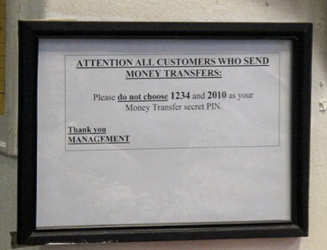
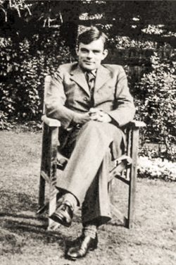
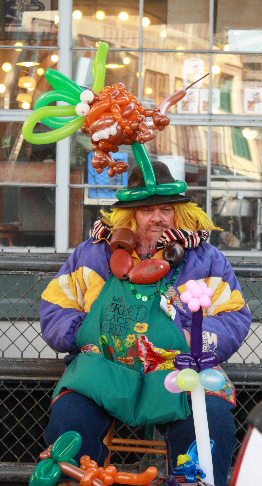

By the time you have successfully completed a PhD, you should be confident in your talents as a researcher. You should feel comfortable that you’ve developed good taste for selecting research problems, possess the tenacity to tackle hard challenges and see them through, have mastered the important technical aspects of your field, and have learned to present your work in writing and verbally.
If you are lacking confidence in those things, you should assume that the people who hired you were not totally duped and that you are more capable than you may realize.
The main new challenges you have as a professor are to raise funding, to advise research students, and to avoid getting stuck in a comfortable rut.
How to Raise Funds

I’m putting fund-raising first, not because it is the most important thing for new faculty, but it is the one thing nearly all new faculty seem to be most worried about (but shouldn’t be!).
Although you will face pressures from your administration to raise as much money as possible, your actual goal should be to raise enough money to be able to support the activities you want, and to raise that money in ways that impose as little overhead (time spent doing things you don’t want to do) and constraints (lack of freedom in how you use the funds) as possible.
For US-based researchers, this means funding from the National Science Foundation and industry gifts. You should consider any other funding sources carefully; there are sometimes great opportunites to get funding from other agencies or non-gift corporate funding, but be wary of the overhead required.1
Read Exemplary Proposals
 Nearly everyone starts their career as a researcher by reading exemplary research papers and learning from them what makes a paper great. Hardly anyone ever reads exemplary proposals, largely because proposals tend to be kept secret so it is hard to find ones to read.
I would encourage everyone to at least read the proposal Alan Turing and three colleagues at Bletchly Park wrote to Winston Churchill to obtain support for cryptanalysis work during World War II. (I’ve annotated the proposal with some sidebar comments.) This is quite different from what is needed for a typical NSF proposal today, but there is still much to learn from it.
Finding more recent versions of proposals to read is tougher, but you can read some of mine here (I wouldn’t claim that they are “exemplary”, but they did get funded; note that some of the specific rules of what must be in an NSF proposal and how it must be formatted have changed since these proposals):
- Automated Security Testing for Applications Integrating Third-Party Services [PDF] (with Yuchen Zhou (PhD Student); NSF Secure and Trustworthy Cyberspace 2013)
- Practical Secure Two-Party Computation: Techniques, Tools, and Applications [PDF]
(with Yan Huang (PhD Student), Aaron Mackey, abhi shelat, Michael Hicks, Jonathan Katz, Steven Myers; NSF Trustworthy Computing 2011)
- Implementable Privacy and Security for Resource-Constrained Devices [PDF]
(with Karsten Nohl (PhD Student), Benton Calhoun, John Lach, and abhi shelat; NSF Trustworthy Computing 2008)
- Programming the Swarm [PDF] (NSF CAREER 2000) (This is very far from being a model proposal, but it did somehow get funded. It was the first proposal I wrote, and gives some idea of how far outside one’s previous work a CAREER proposal can be.)
Write Fewer Proposals
Many new faculty seem to get the advice (especially from adminstrators who benefit from their funding overhead charges!) to go after as many funding opportunities as they can, and I’ve known of new faculty who submit over a dozen proposals a year (and one who bragged of submitting over 100 proposals before going up for tenure!), including from low quality funding sources.
 Sometimes this advice is given by well-meaning individuals who point to low acceptance rates from NSF, and encourage faculty to submit lots of proposals to hope one or two get lucky. This would make sense if the review process was really arbitrary, but its not.
NSF’s proposal review process is done by panels of faculty recruited by the Program Manager. These reviewers (for the most part) take it very seriously and have substantive discussions about the content of proposals to decide what to recommend for funding. Most panels meet for an in-person two-day meeting in Arlington, although teleconference panels are occasionaly used. The panel reaches a consensus, and makes a recommendation to the Program Manager, who then makes a recommendation up the chain for which proposals should be funded.
From my experience (as both a submitter and panelist), at least, this process works remarkably well. In retrospect, think the correct decision has been made for nearly every proposal I’ve submitted in the past 10 years, and although I have sometimes disagreed with recommendations made by a panel I’ve been on, all but one (of about 15 panels I’ve been on) worked well and made decisions based on substantive analysis of the merits of submitted proposals.
So, if you are being advised to submit lots of proposals because of low acceptance rates reported for NSF programs, the correct response is to submit fewer proposals, and to put better ideas and more effort into each one to ensure it has a high likelihood of being funded. Don’t submit a lot of proposals because you want to look productive (or are told that’s what you should do to be productive), or because you think funding decisions are mostly arbitrary so your chances are maximized by sending off lots of mediocre proposals.
NSF funding decisions are much less random that those from even the best program committees, and it is much better to submit one or two good proposals a year than to try writing many mediocre ones.
Get Useful Feedback
Part of writing fewer proposals is to have more time to get useful feedback on each proposal before it is submitted. Getting feedback before submission is especially important for your first few proposals, but even as an experienced proposal-writer, it is useful to see how well your ideas come across in the proposal to someone unfamiliar with them.
Don’t expect to get useful feedback from the actual reviews. By the time you get these, it will be at least six months after you submitted the proposal, and they will be watered down to the point where it is hard to know what the reviewers really felt.2
To get useful feedback, you need to have a fairly complete draft of the proposal ready well before the deadline and get a colleague to read it critically. This needs to be done at least two weeks before the deadline to give the reader enough time to read it, and leave enough time for you to make substantial revisions in response (and possibly even run the revised version by the reader before submission).
Hopefully, you have someone who can provide useful feedback to you on your proposals. If you’ve read this far and have a fairly complete proposal ready at least two weeks before the deadline, though, I’m happy to provide feedback on it (but may be of limited help depending on how close you are to areas I know something about).
How (and Why) to Advise
Following a world cup qualifying vicotory where two players he developed for the national team subbed into the game and performed well, a reporter asked coach Jürgen Klinsmann whether he was “lucky or brilliant”. His answer was that he felt “proud”. The biggest reward you get as an advisor is when you can feel proud of your student, and you get to do this no matter if you were brilliant or lucky!
The biggest challenge you have as a new professor is that your experience with research advising is probably limited to what you experienced with your own PhD advisor (and perhaps a few other research supervisors). This is hopefully a good and valuable experience, but you should be wary of thinking you know how to advise students by doing what your advisor did for you.
You were a unique and exceptional student, so the way your advisor advised you is almost certainly the wrong way for you to advise your students!
Nano-manage or Deci-manage, but never Micro-manage
The main thing you need to decide is how much freedom you want do give your students. Ideally, all of your students will be brilliant, wise, self-motivated, and posessing uncanny judgement. For such students, deci-management is the best option. Provide a few pointers to things that you think are interesting, give feedback on the ideas the student comes up with, and help with the finer points of how to present the work effectively. But, otherwise, give the student as much space and little management as possible.
In other situations, nano-management may be better. This means working closely with the student, perhaps even working together on part of a project (for me, this is most common with writing, but can be appropriate for design and programming also). It is very worthwhile to go through work in great detail, providing feedback and suggestions at a low-level.
For most students, a mix of deci-management and nano-management is best. I don’t know of any students for whom deci-management was the best approach for their entire PhD process, and any student who needs to be nano-managed for more than a few short periods during their PhDship is probably better off pursuing a different career.
Micro-management is the worst possible strategy. It gives the managee so much direction that they are left with no opportunity for creativity or (positive) surprise, but not enough direction to make the likelihood of failure low and not enough collaboration to be a good learning experience. I don’t think anyone enjoys being micromanaged, and if you enjoy being a micromanager you should find a job at a large, established company.
Your aim as an advisor should be to develop your students into research leaders. This means by the time they graduate they have the ability and confidence needed to identify good problems to work on on their own and can carry out all aspects of doing the research, including presenting it. If you micromanage your students, they may be more productive and appear more successful, but won’t develop what they need to succeed as an independent research leader.
How to Avoid Ruts
It may be strange to focus on avoiding ruts in advice for new faculty members, but falling into a rut is one of the main dangers you face.
The most comfortable thing to do as a new professor is to keep working on the same kinds of things you did for your dissertation, and its easy and common to fall into the trap of spending your whole career doing essentially the same thing over and over. For some people, this may be the right decision. There are many researchers who I greatly respect who have devoted their full careers to one problem and developed a line of research that was a sustained effort in a consistent direction to tackle that problem. If you are convinced that the problem you are working on is the most interesting one, and that the approach you take is the best way you can contribute to it, its fine to spend your whole career focused in that way. But, this should be a conscious decision, not something you fall into accidentally by just making a series of “comfortable” decisions until it is too hard to try something different.
Zachary Ernst
Switch Areas Frequently. For most researchers, the best course is to find new areas that you find interesting, and which you can bring a different perspective to. If you work on the same problems with similar background and perspective as everyone else, the only way you can do something significant is if you are smarter, harder-working, and luckier than others. Changing focus is uncomfortable though — working in a new area requires abandoning all the experience and knowledge you have in your current area and learning about something new. The good news in computer science, at least, is that our field is immature enough that in most areas it only takes a few months to get sufficiently up-to-speed to start making research contributions.
It is also beneficial if you can vary the problems and approaches you take without needing to abandon your research community (where a research community is mostly defined by a set of conferences that attract a common group of people). As a new professor, it is important that you build your reputation and get to know a core group of people in a particular research community. One of the great things about being in the security and privacy research community is that you can work in almost all areas of computer science without being disconnected from a primary research community. This is probably harder in other research communities, but not impossible.
Be First or Last. Aim to write either the first paper on X, or the last paper on Z. You’ll have a lot more impact by doing this, than by writing the 23rd, 26th, 87th, and 193rd papers on some well-studied topic. If you find yourself working in an area that is so crowded, you more worried about getting scooped by someone else doing the same thing, its time to switch areas. Much better to be working on something where you are happy to find one or two like-minded colleagues to collaborate with, than something where you feel the need to be secretive about your latest incremental advance for fear that others are doing something similar and you are in a race to publish first.
Find and Empower Creative Students. One of the best ways to avoid getting stuck in ruts, is to ensure that you keep working with new people who bring different ideas and perspectives from your own. Collaborations with other professors and senior researchers can do this, but (at least in my experience) such collaborations are very difficult beyond efforts to write funding proposals except when they are driven by a student. The best way to continually refresh your research is to allow students to drive you into new areas. Don’t be afraid to let students work on things you don’t know much about, just expect them to enough to convince you it is worthwhile and interesting.
- DARPA programs typically require PIs to attend at least four PI meetings every year, some as many as six), reports (e.g., some funding requires monthly reports), and constraints (e.g., many DoD awards require strict adherance to a “Statement of Work”, and the people who check-off that you do what is on that list tend to not be researchers so are not easy to convince that a new idea is better than what was originally proposed). This is why research groups (and companies) that fall into the trap of taking such funding, end up spending most of their effort managing DARPA, rather than actually doing research. [return]
- At the end of an NSF panel, all the panelists go through all the reviews and review summaries, and any verbiage that might be deemed negative is toned down. This is good for avoiding hurt feelings, but usually means the most useful advice to the proposer is removed or obfuscated before the reviewers are sent back. [return]